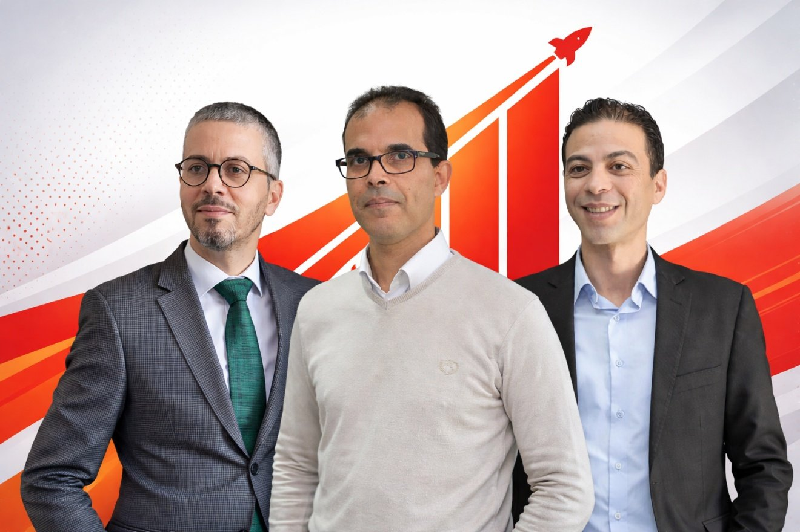

<section class="section trusted-companies" id="team">
  <div class="container">
    <h2 class="section-title" data-en="Our Expert Team" data-fr="Notre Équipe d'Experts">Our Expert Team</h2>
    <p class="section-subtitle"
       data-en="A multidisciplinary team of highly qualified professionals dedicated to your success"
       data-fr="Une équipe multidisciplinaire de professionnels hautement qualifiés dédiés à votre succès">
       Une équipe multidisciplinaire de professionnels hautement qualifiés dédiés à votre succès
    </p>

    <!-- Team Photo -->
    <div style="text-align: center; margin: 3rem 0;">
      
    </div>

    <!-- Team Members Grid -->
    <div style="display: grid; grid-template-columns: repeat(auto-fit, minmax(320px, 1fr)); gap: 2.5rem; margin-top: 4rem;">
      
      <!-- Najib Elmo -->
      <div class="team-card">
        <div class="team-info">
          <h4 class="team-name">Najib Elmo</h4>
          <p class="team-title"
             data-en="Managing Director – Eng. – UQAM | ÉTS Montréal"
             data-fr="Directeur Général – Ing. – UQAM | ÉTS Montréal">
             Directeur Général – Ing. – UQAM | ÉTS Montréal
          </p>
          <div class="team-expertise">
            <span class="expertise-tag">ISO 9001</span>
            <span class="expertise-tag">ISO 14001</span>
            <span class="expertise-tag">ISO 45001</span>
            <span class="expertise-tag">ISO/IEC 17025</span>
            <span class="expertise-tag">AS9100</span>
            <span class="expertise-tag">ISO 13485</span>
            <span class="expertise-tag">ISO 18788</span>
            <span class="expertise-tag">ISO 26000</span>
          </div>
          <p class="team-role"
             data-en="Continuous improvement specialist and management systems standards expert"
             data-fr="Spécialiste en amélioration continue et expert en standards de systèmes de management">
             Spécialiste en amélioration continue et expert en standards de systèmes de management
          </p>
        </div>
      </div>

      <!-- Mohamed Fathi -->
      <div class="team-card">
        <div class="team-info">
          <h4 class="team-name">Mohamed Fathi</h4>
          <p class="team-title"
             data-en="Eng. – University of Metz (France) | Laval University (Canada)"
             data-fr="Ing. – Université de Metz (France) | Université Laval (Canada)">
             Ing. – Université de Metz (France) | Université Laval (Canada)
          </p>
          <div class="team-expertise">
            <span class="expertise-tag">IRCA ISO 9001</span>
            <span class="expertise-tag">Six Sigma Black Belt</span>
          </div>
          <p class="team-role"
             data-en="Certified auditor and expert in management systems, performance optimization, procurement & logistics"
             data-fr="Auditeur certifié et expert en systèmes de management, optimisation de la performance, achats & logistique">
             Auditeur certifié et expert en systèmes de management, optimisation de la performance, achats & logistique
          </p>
        </div>
      </div>

      <!-- Smaïl Aboulam -->
      <div class="team-card">
        <div class="team-info">
          <h4 class="team-name">Smaïl Aboulam</h4>
          <p class="team-title"
             data-en="PhD – ENSAT (France)"
             data-fr="PhD – ENSAT (France)">
             PhD – ENSAT (France)
          </p>
          <div class="team-expertise">
            <span class="expertise-tag">CSR</span>
            <span class="expertise-tag" 
                  data-en="Sustainable Performance"
                  data-fr="Performance Durable">Performance Durable</span>
          </div>
          <p class="team-role"
             data-en="Expert in sustainable performance engineering and corporate social responsibility"
             data-fr="Expert en ingénierie de la performance durable et en responsabilité sociétale des entreprises">
             Expert en ingénierie de la performance durable et en responsabilité sociétale des entreprises
          </p>
        </div>
      </div>

    </div>
  </div>
</section>
